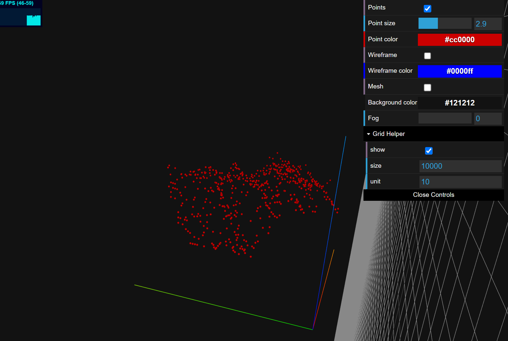
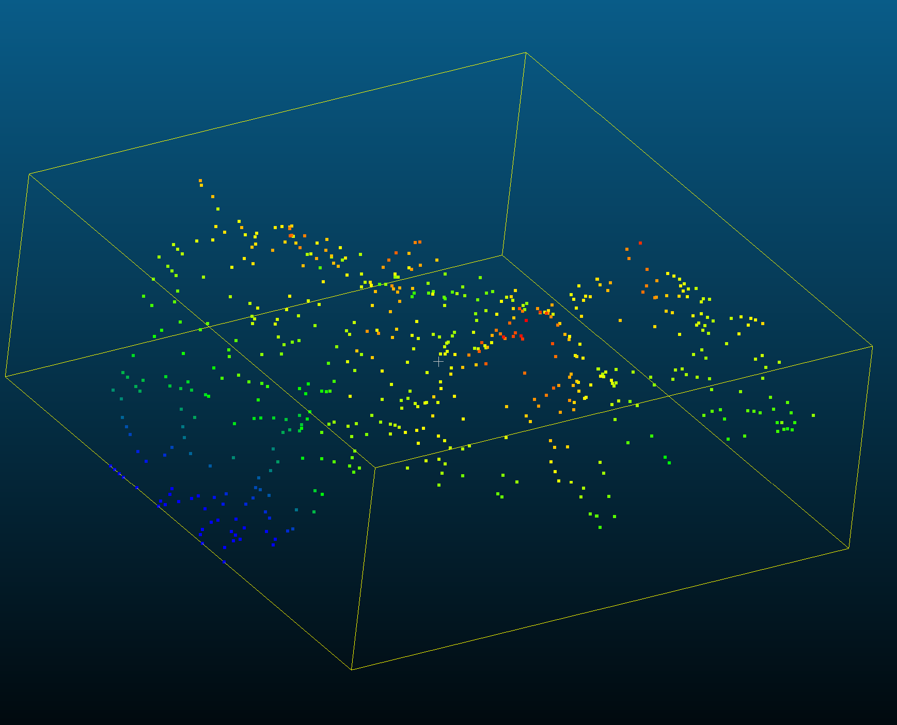
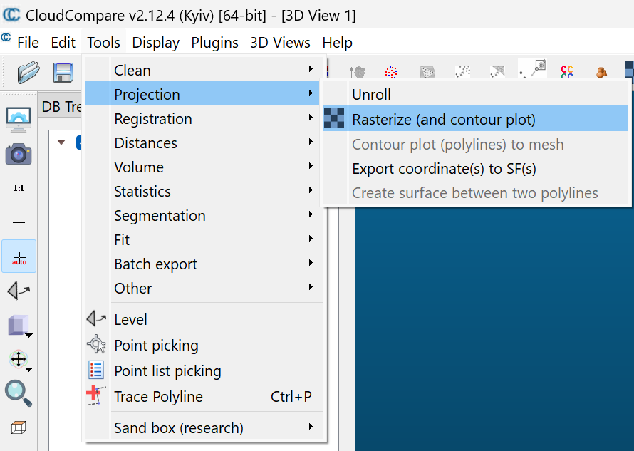
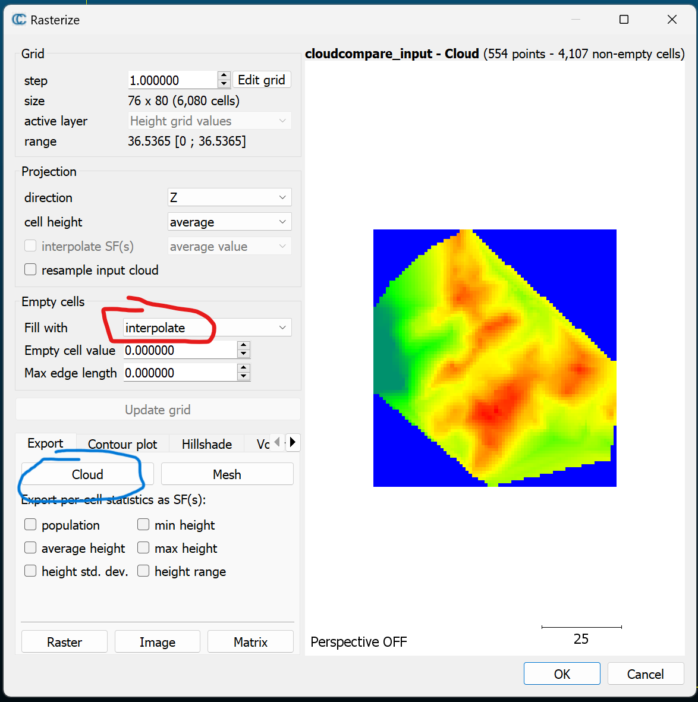
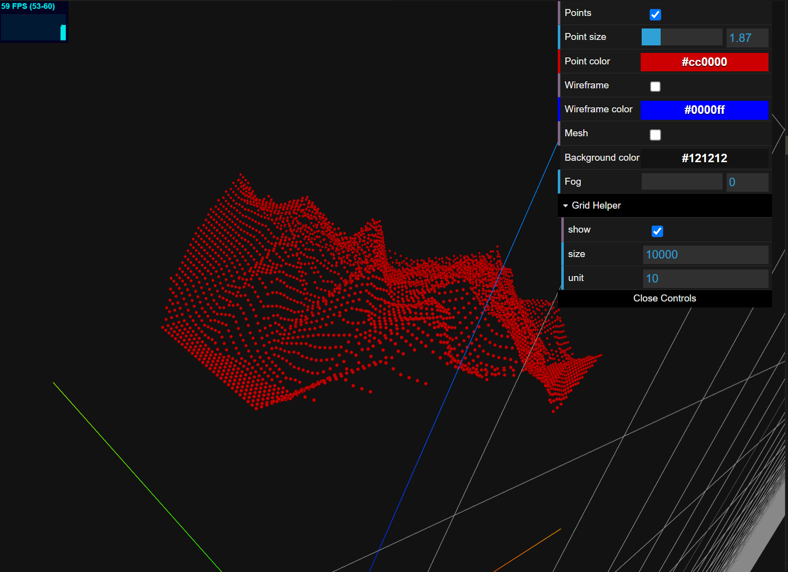
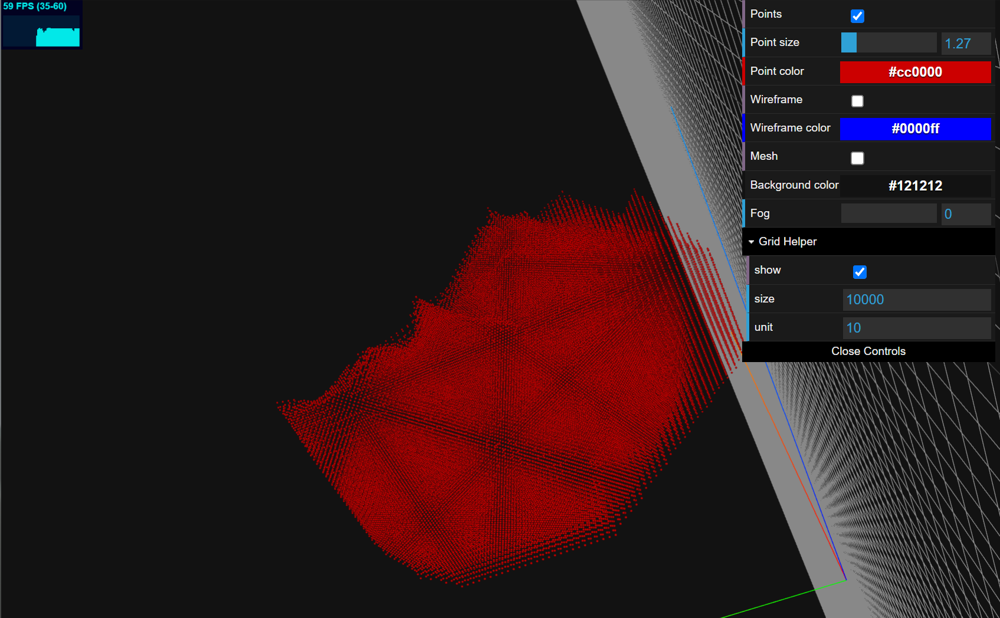

Case 3 (Workflow "3D Point Cloud")
Data Preperation
Please check the file /docs/src/assets/w3_case/cloudcompare_input.xyz. This file can be seen as the scanning from drone or other devices. The particles are not uniformed, as shown follow:

Step 1. Let's import this file into CloudCompare

We choose rasterize on the point cloud:


Here we need to note that: 1) empty cells fill with Interpolate to get structured cloud on X-Y plane, and 2) users need to find the best parameter of grid (step and range)
We can generate mesh and than using sampling to change the density of point cloud.
Export cloud points as cloudcompare_output.ply.
We can use MeshLab to delete the blue (bottom) particles and convert to .xyz file.
You can find this file from /docs/src/assets/w3_case/cloudcompare_output.xyz, and it looks like this:

Step 2. Using MaterialPointGenerator.jl
using MaterialPointGenerator
# define the input and output path
data_path = joinpath(@__DIR__, "../examples/cloudcompare_output.xyz")
output_path = joinpath(@__DIR__, "../examples/test_output.xyz")
# read the point cloud data
data = read_pointcloud(data_path)
# generate the material points
mp = mp_generate(data, 0.0)
# write the material points to the output path
write_pointcloud(mp, output_path)And then, you can see the output result:

You can find this file from /docs/src/assets/w3_case/test_output.xyz.